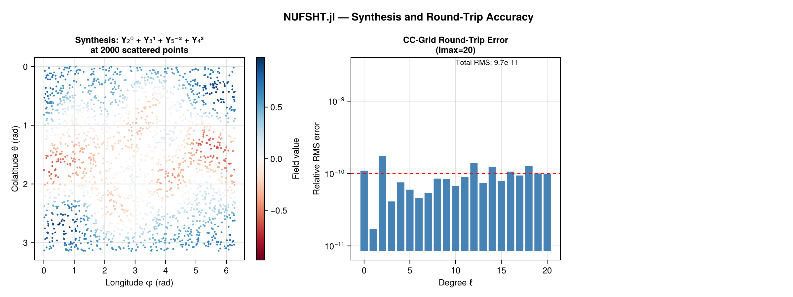
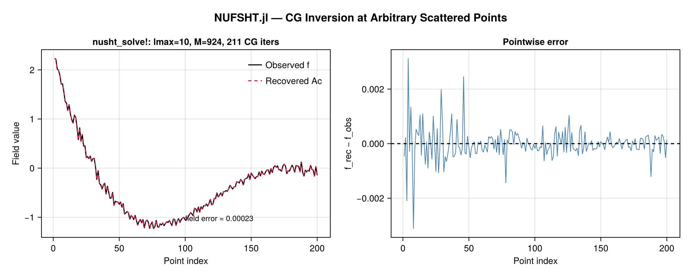
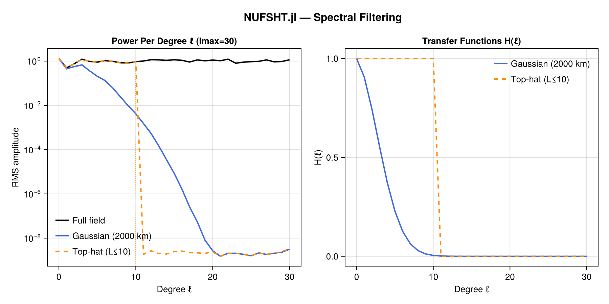
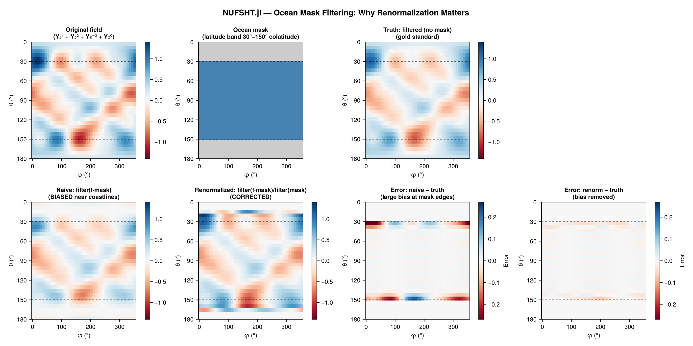

NUFSHT.jl
Non-Uniform Fast Spherical Harmonic Transforms — native Julia implementation of the Double Fourier Sphere (DFS) + NUFFT algorithm for spherical harmonic transforms at arbitrary scattered (colatitude, longitude) points.
Results
Synthesis + Round-Trip Accuracy (10⁻¹¹ relative error)

CG Inversion at Arbitrary Scattered Points

Spectral Filtering

Ocean Mask + Renormalization

What it does
Given a field sampled at M arbitrary points on the sphere, NUFSHT.jl can:
- Synthesise (Type 2): Evaluate a bandlimited field (given as SH coefficients) at any scattered point set in O(K log K + M) time.
- Analyse (Type 1): Project scattered values back to SH coefficients; exact on the Clenshaw-Curtis (CC) quadrature grid.
- Solve (CG): Exactly invert the synthesis operator at any scattered point set via Conjugate Gradients.
- Filter: Apply isotropic spectral filters (Gaussian, top-hat, custom) entirely in harmonic space.
Quick start
using Pkg
Pkg.add(url="https://github.com/jbphyswx/NUFSHT.jl")using NUFSHT, FastSphericalHarmonics
lmax = 30
θ = rand(5000) .* π # colatitudes ∈ (0,π)
φ = rand(5000) .* 2π # longitudes ∈ [0,2π)
plan = make_plan(θ, φ, lmax; tol=1e-8)
# Synthesise at scattered points
C = zeros(lmax+1, 2lmax+1)
C[sph_mode(2, 0)] = 1.0
f = zeros(length(θ))
nusht_type2!(f, C, plan)
# Exact inversion via CG (for non-CC scattered points)
C_rec = similar(plan.C)
C_rec, iters, rel_res = nusht_solve!(C_rec, f, plan; rtol=1e-6)Which function should I use?
| Scenario | Function |
|---|---|
| Evaluate SH expansion at scattered points | nusht_type2! |
| Invert / analyse on Clenshaw-Curtis grid | nusht_type1! |
| Invert at arbitrary scattered points | nusht_solve! |
| Apply spectral filter at scattered points | nusht_filter! |
| Filter with land/ocean mask | nusht_filter! + nusht_filter_renorm! |
Contents
Module
NUFSHT.NUFSHT — Module
NUFSHT.jl — Non-Uniform Fast Spherical Harmonic Transform (native Julia)Double Fourier Sphere (DFS) + nuFFT spherical harmonic transforms at arbitrary scattered (colatitude, longitude) points. The synthesis operator factors as A = N·F·D·S:
- S (
plan_sph2fourier/plan_sph_synthesis): iso-latitude Legendre step between SH coefficients and an equiangular Clenshaw-Curtis grid. - D (
dfs_double!/dfs_fold!): "doubling" that extends colatitude [0,π] → [0,2π) across the south pole, making the field doubly-periodic. - F (
fft_plan/ifft_plan+ half-pixel phase): 2D FFT on the doubled torus. - N (FINUFFT guru type 2 / type 1): non-uniform FFT evaluating the 2D Fourier series at the scattered points.
A NUSHTplan owns persistent FINUFFT guru plans (built once, points set once) and every work buffer, so repeated transforms — filtering, or the hundreds of matvecs in nusht_solve! — allocate nothing and never re-plan. All calls transform a batch of B = plan.B co-located fields (ntrans); B = 1 methods accept plain vectors/matrices.
References
- Merilees (1973); Townsend & Olver (2015); Reinecke & Seljebotn (2013, A&A 554 A112); Keiner, Kunis & Potts (2009); Belkner et al. (2024, arXiv:2406.14542).
- FastSphericalHarmonics.jl, FINUFFT.jl, FastTransforms.jl.